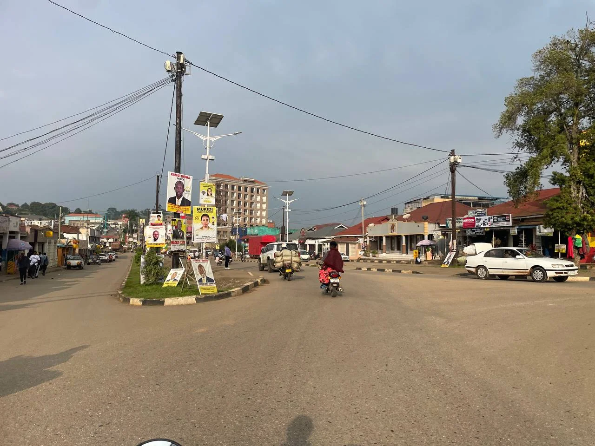

Fort Portal feels like a town that understands the value of composure. The air is cooler, the surrounding hills are kind to the eye, and the broader region is full of crater lakes, tea estates, caves, and forest access that make a weekend feel quietly abundant rather than overprogrammed. It is western Uganda in one of its most relaxed moods.
What makes a weekend here work so well is the town's position. You can move easily into scenic excursions, return to comfort, and never feel as though the day has become a logistical test. That ease helps the beauty land properly.
Fort Portal is therefore ideal for travelers who want a route with softness, not emptiness.
Scenic Days Without Hard Effort
A weekend in Fort Portal can hold crater-lake views, short scenic drives, cultural stops, tea-country atmosphere, and slow meals without ever feeling rushed. The region lends itself to days that are full but still breathable.
That makes it especially attractive to couples and slow travelers.
Why It Works As A Base
Fort Portal gives access to more intense experiences nearby, but it does not force the trip into constant exertion. You can use it to reach Kibale or scenic sites while preserving a calmer emotional center for the journey. That balance is one of the town's great strengths.
It is restful in the right way: active enough to stay interesting, gentle enough to feel restorative.
Who Should Choose Fort Portal
Travelers wanting western Uganda without only safari pressure, readers who enjoy scenery and town comfort together, and anyone trying to build a more graceful itinerary will usually find Fort Portal very appealing.
For a short stay with beauty, access, and calm, it is one of Uganda's best weekend answers.